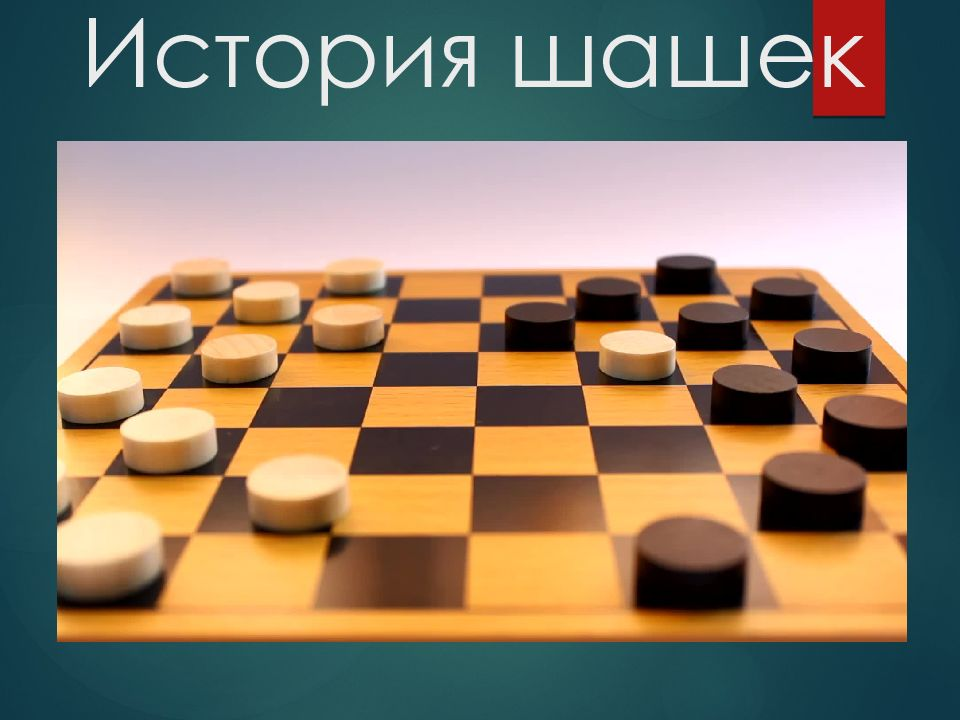

Точная дата возникновения шашек неизвестна, но упоминания об этой игре встречаются ещё в древности. Причём в разных точках земного шара. Соответственно, правила шашек формировались в разных вариантах, независимо друг от друга. Унификация произошла многим позже. Поворотным моментом истории игры стал 19 век. В конце столетия по шашкам стали проводиться национальные чемпионаты, в том числе и в России. А первый чемпионат мира состоялся в 1895 году. Первым чемпионом мира стал француз – Исидор Вейс, который впоследствии удерживал титул без малого два десятилетия. Международная федерация шашек (ФМЖД) была основана в 1947 году. Со следующего года она стала официальным организатором мировых первенств. С 1973 года к мужскому чемпионату мира добавился и женский турнир.
